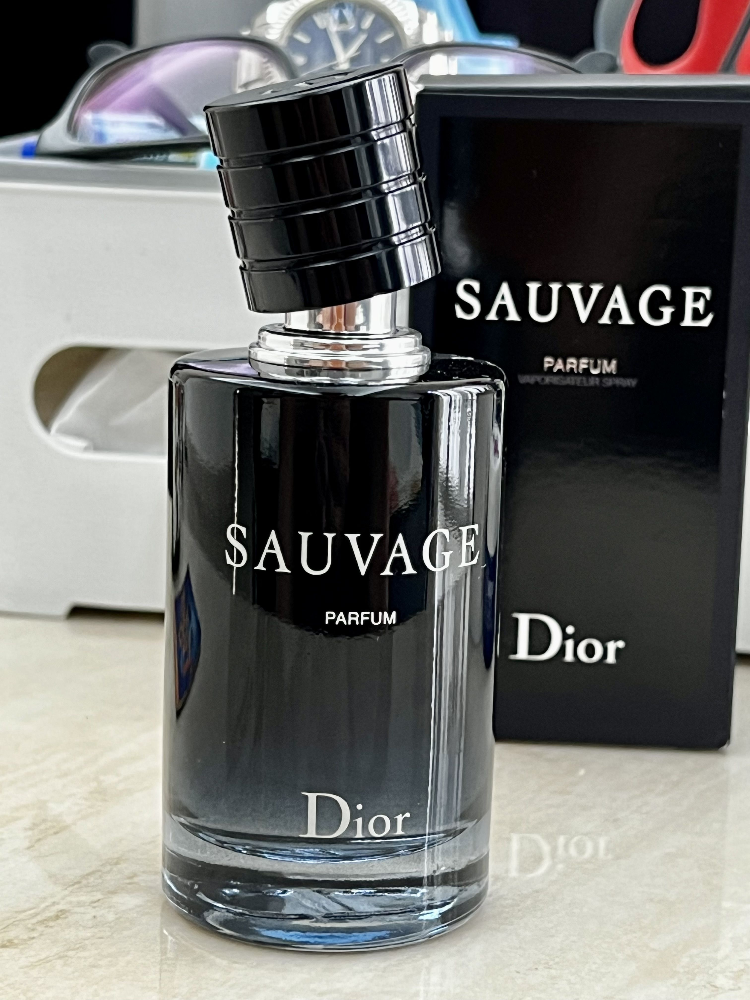
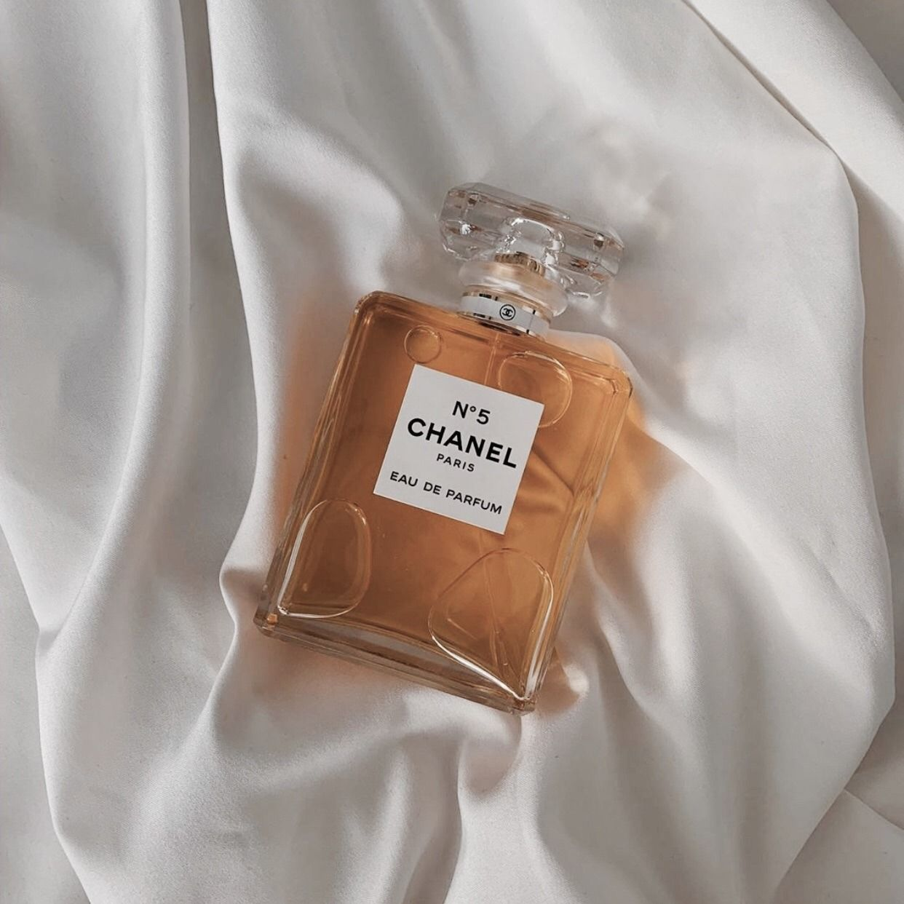
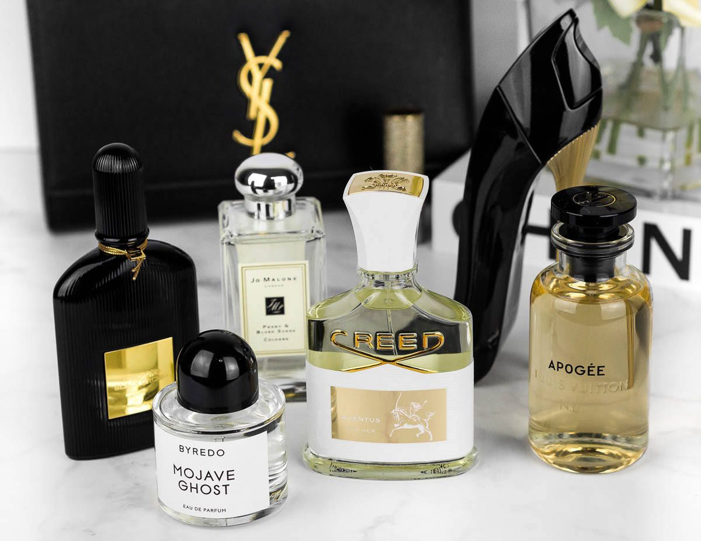

Dior Sauvage is a timeless fragrance that captures attention with its bold freshness. – Perfume Enthusiast “Every spray feels like a burst of nature, wild and untamed. – Fragrance Lover

Coco Chanel was a French fashion designer, businesswoman, and an iconic figure of the 20th century. Following is our collection on famous quotes by Coco Chanel fashion, perfume.

Gucci Bloom is a rich floral fragrance that captures the spirit of contemporary femininity. our collection on famous quotes about Gucci Bloom perfume and its natural, blooming essence.
Perfume has always been more than just a fragrance — it is an invisible signature, a personal statement, and a lasting memory. As Estée Lauder once said, “Perfume is like a new dress, it makes you quite simply marvelous.” Gianni Versace described it perfectly: “Perfume puts the finishing touch to elegance — a detail that subtly underscores the look, an invisible extra that completes a man and a woman’s personality.” Without perfume, there is always something missing. Christian Dior believed that “Perfume is a mark of female identity and the final touch of her style,” while Coco Chanel famously advised, “Wear perfume wherever you want to be kissed.” These timeless words remind us that perfume is not just about scent — it is about confidence, charm, and individuality. Thierry Mugler also noted, “Perfume must not be linked just to fashion because that means that one day it will go out of style.” True fragrances never fade; they become a part of who we are. Perfume is also deeply connected with love and memory. Ralph Waldo Emerson said, “Love is a perfume you cannot pour onto others without getting a few drops on yourself.” Jean-Claude Ellena beautifully captured it: “Perfume is a story in odor, sometimes poetry in memory.” A fragrance lingers long after its wearer has gone, becoming an invisible reminder of moments, emotions, and people we cherish. For those who seek to experience this magic every day, Venkatesa Ram S Perfume Shop in Sholinghur, Ranipet District, is the trusted destination. Known as an all-in-one perfume store, it offers a wide variety of fragrances — from timeless classics to modern international scents. With best quality and best prices, it remains the perfect place for perfume lovers to find their signature scent.
+31 2736196186
perfectperfumes49@gmail.com
In Ranipet District, Sholinghur, Venkatesa Ram S Perfume Shop is the trusted destination for fragrance lovers. Known as an all-in-one perfume store, it offers a wide variety of scents — from classic attars to modern international perfumes. Customers appreciate the best quality and best prices, making it a favorite choice for both everyday wear and special occasions.